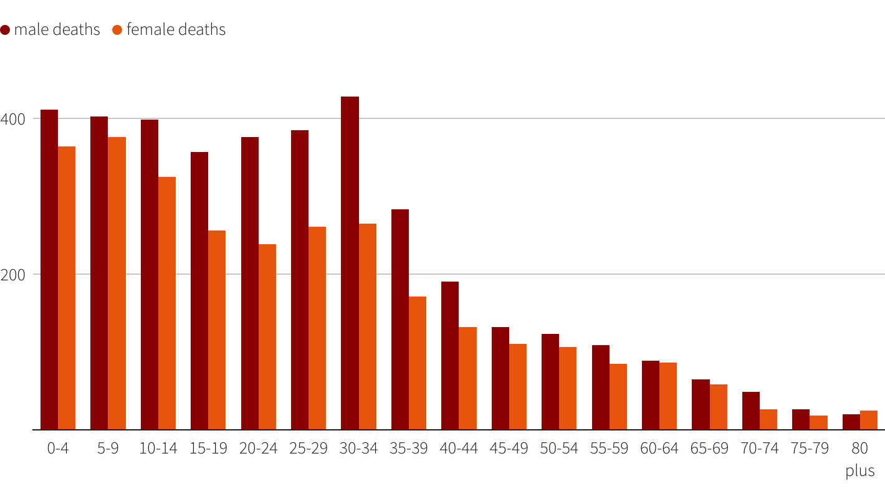
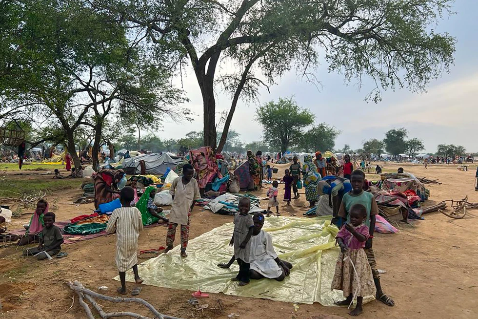
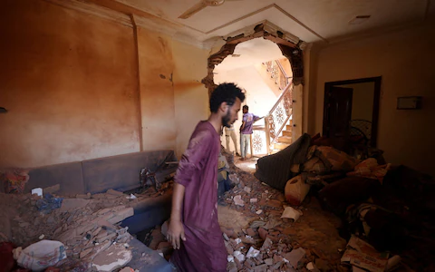

Is What’s Happening in Gaza a Genocide?

More than 17,000 people have been killed in Gaza since Oct. 7, after a deadly Hamas attack prompted Israel to declare war and begin a military offensive along the densely-populated strip of land more than 2 million people call home
The PA health ministry said on Tuesday about 70% of Gaza's dead were women and children under 18, but it has released no breakdown of age categories since its Oct. 26 report.
The Lancet article said the ministry report's data showed that 11.5% of the deaths recorded between Oct. 7-26 were children between ages 0 and 4, 11.5% between ages 5 and 9, 10.7% between 10 and 14 and 9.1% between 15 and 19.
"There was a distinct peak among men aged 30–34 years, possibly reflecting combatant or civilian exposures (e.g., first responders at bomb sites, journalists, and people going out to seek water and food for their families)," it said.

On 12 October, Israeli forces issued an order for 1.1 million Palestinians in north Gaza to move to the south within 24 hours, amidst ongoing airstrikes. The next day, Israeli forces reportedly began to enter Gaza in order to “clear” the area. Palestinians have no safe zone anywhere in Gaza, with Israel having imposed a “complete siege” on the tiny enclave, with water, food, fuel and electricity unlawfully cut off. Rafah, the only border crossing that remained partially open to the Gaza strip, was closed after damage caused by Israeli airstrikes.
“Israel has already carried out mass ethnic cleansing of Palestinians under the fog of war,” “Again, in the name of self-defence, Israel is seeking to justify what would amount to ethnic cleansing.
“Any continued military operations by Israel have gone well beyond the limits of international law. The international community must stop these egregious violations of international law now, before tragic history is repeated. Time is of the essence. Only Palestinians deserve to live in peace with all rights dignity and freedom.
اللهم الطف بإخواننا المسلمين المستضعفين في فلسطين اللهم كن لهم مؤيدًا ونصيرًا ومعينًا وظهيرًا اللهم اجعل لهم من كل هم فرجًا ومن كل ضيق مخرجًا
ومن كل بلاء عافية
Uighurs: 'Credible case' China carrying out genocide
There is a "very credible case" that the Chinese government is carrying out the crime of genocide
against the Uighur people, according to a formal legal opinion newly published in the UK.
It concludes there is evidence of state-mandated behaviour
showing an intent to destroy the largely Muslim minority in north-western China.
This includes the deliberate infliction of harm on Uighurs in detention, measures to prevent
women giving birth - including sterilisation and abortion - and the forcible transfer of Uighur children
out of their community.
And, significantly, it says there is a credible case that Chinese President Xi Jinping is
himself responsible for these crimes against humanity. It states "the close involvement of Xi Jinping"
in the targeting of Uighurs would support a "plausible" case of genocide against him.
It says: "On the basis of the evidence we have seen, this Opinion concludes that there is a very
credible case that acts carried out by the Chinese government against the Uighur people in Xinjiang
Uighur Autonomous Region amount to crimes against humanity and the crime of genocide."
A legal opinion is the professional judgement of a respected QC - an independent expert in
their field - who assesses the evidence and the law and comes to a conclusion. It does not have a legal
standing, like a court judgement, but can be used as a basis for legal action.
This opinion was commissioned - but not paid for - by the Global Legal Action Network, a human
rights campaign group that focuses on cross-border legal issues, and the World Uighur Congress and the
Uighur Human Rights Project.
Extensive war crimes' and 'unimaginable horror' in Sudan,
 Amnesty International said on Thursday that Sudan's warring parties have committed "extensive war
crimes" including mass
killings of civilians, rape and sexual slavery of women in the ongoing conflict. The east African
country plunged into
chaos in mid-April when monthslong tensions between the military and the paramilitary Rapid Support
Forces (RSF)
exploded into open fighting in the capital of Khartoum and elsewhere across the country.
The human rights group's 56-page report said civilians were deliberately targeted and killed and
wounded. Women were
raped, with some of them held in conditions "amounting to sexual slavery" mostly in the capital,
Khartoum, and the
western region of Darfur.
"Sexual violence has been a defining element of this conflict since the beginning," Donatella Rovera,
co-author of the
report, told The Associated Press. "Civilians really have no good options. It's difficult for them to
leave. It's
incredibly dangerous for them to stay."
Sexual assault happening 'on a large scale'
Almost all rape cases were blamed on the RSF and its allied Arab militias. The report said the RSF abducted 24 women and girls – as young as 12– and held them "for several days during which they were raped by several RSF members."Rovera said that war crimes such as sexual assault are happening, "on what seems to be a large scale." While the RSF, which was born out of the notorious Janjaweed militias, was also blamed for most of the deliberate attacks and rape cases, some members of the military were accused of the crimes, Amnesty said.
Responding to the report, the military said they had established a unit to ensure targeted decisions to minimize civilian harm while the RSF denied allegations of sexual violence, as well as carrying out violent acts in West Darfur.
The conflict has turned Khartoum and other urban areas into battlefields. Darfur – which had been the scene of genocidal war in the early 2000s – saw some of the worst bouts of violence with the current fighting turning into ethnic clashes.

Looting, destruction of homes and hospital
Amnesty detailed waves of violence in West Darfur province –one of five constituting the Darfur region – including the killing of civilians, looting and destruction of homes and facilities such as the main hospital and markets.The killing of West Darfur Governor Khamis Abdalla Abkar on June 14 – following his detention by the RSF – promoted an exodus of many members of the African Masalit community to eastern Chad, which turned into an open camp for those who fled the fighting in Darfur, Amnesty said.
"Civilians throughout Sudan are suffering unimaginable horror every single day," said Agnès Callamard, the group's secretary general. He called on the warring sides and their affiliated groups to "end their targeting of civilians, and guarantee safe passage for those seeking safety.
On April 20, an attack in Khartoum's southern neighborhood of Kalakla killed three children from the same family as they tried to escape the gunfire, the group said, adding that it was not able to determine which side was responsible for the killing. The group said it also documented an attack by the RSF on the complex of the Mar Girgis Coptic church in Khartoum's Bahri district. RSF members in a pick-up vehicle stormed the church shooting five members of the clergy, and stole money and a gold cross, the report said citing witnesses.
Amnesty's report was the latest one documenting atrocities in Sudan's conflict. Last month, Human Rights Watch called for the International Criminal Court to investigate atrocities in Darfur including "summary executions" of around three dozen of 28 non-Arab tribesmen in a Darfur town.
The United Nations Human Rights Office said a mass grave was found outside Geneina with at least 87 bodies, citing credible information. And the International Criminal Court's prosecutor, Karim Khan, told the UN Security Council in July they were investigating alleged new war crimes and crimes against humanity in Darfur. "There are allegations that this could be ethnic cleansing," said Rovera. "The situation is a very difficult one, is a very dangerous one because it can escalate further.